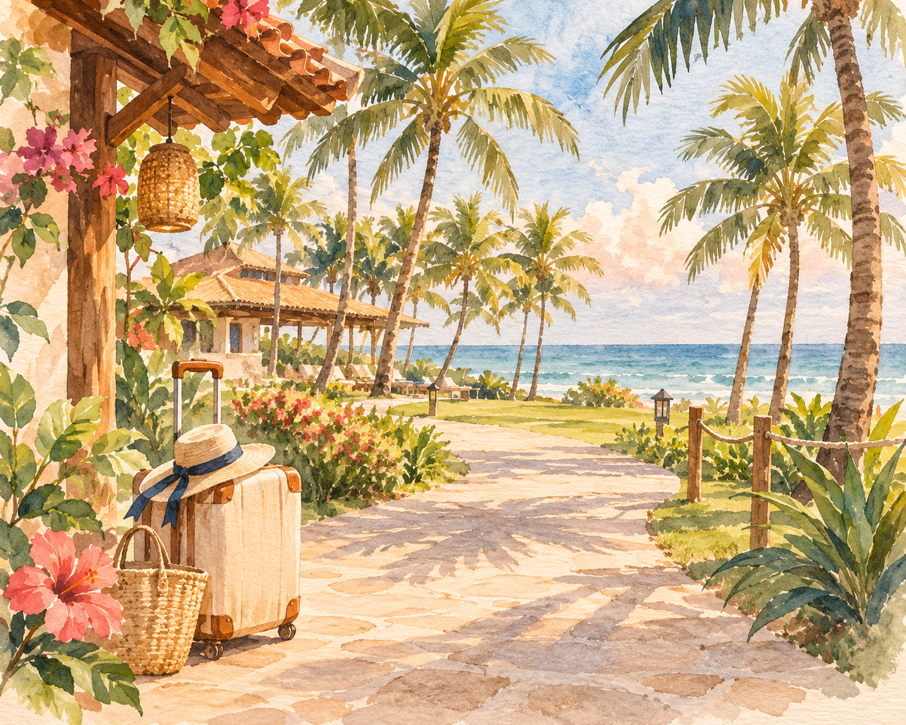
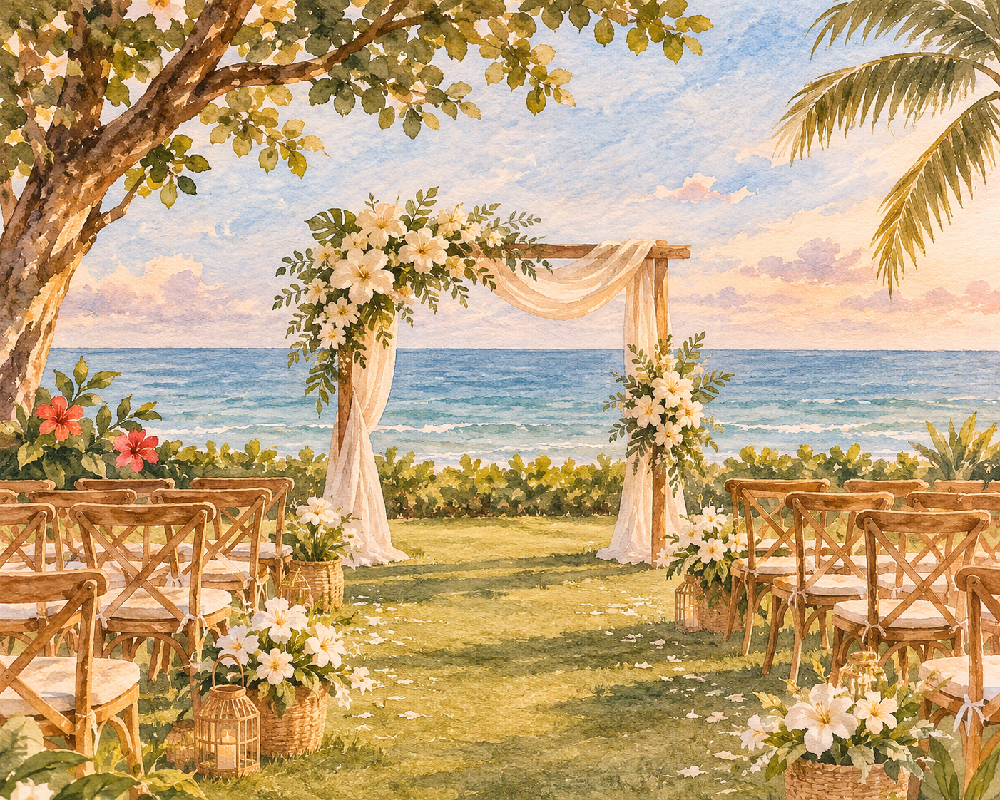
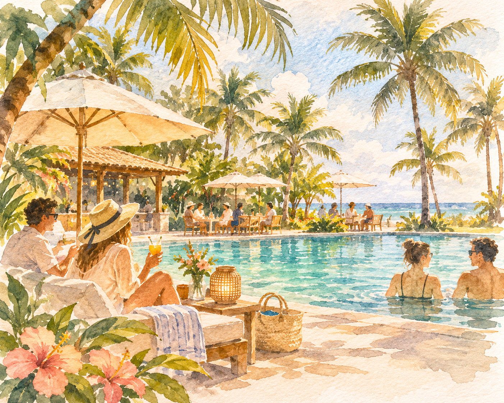
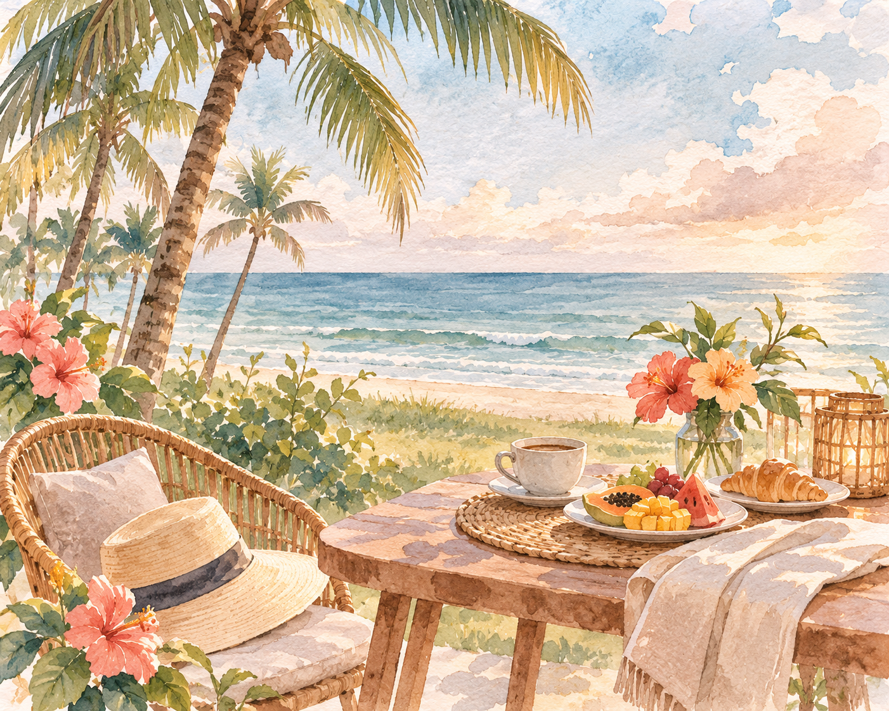
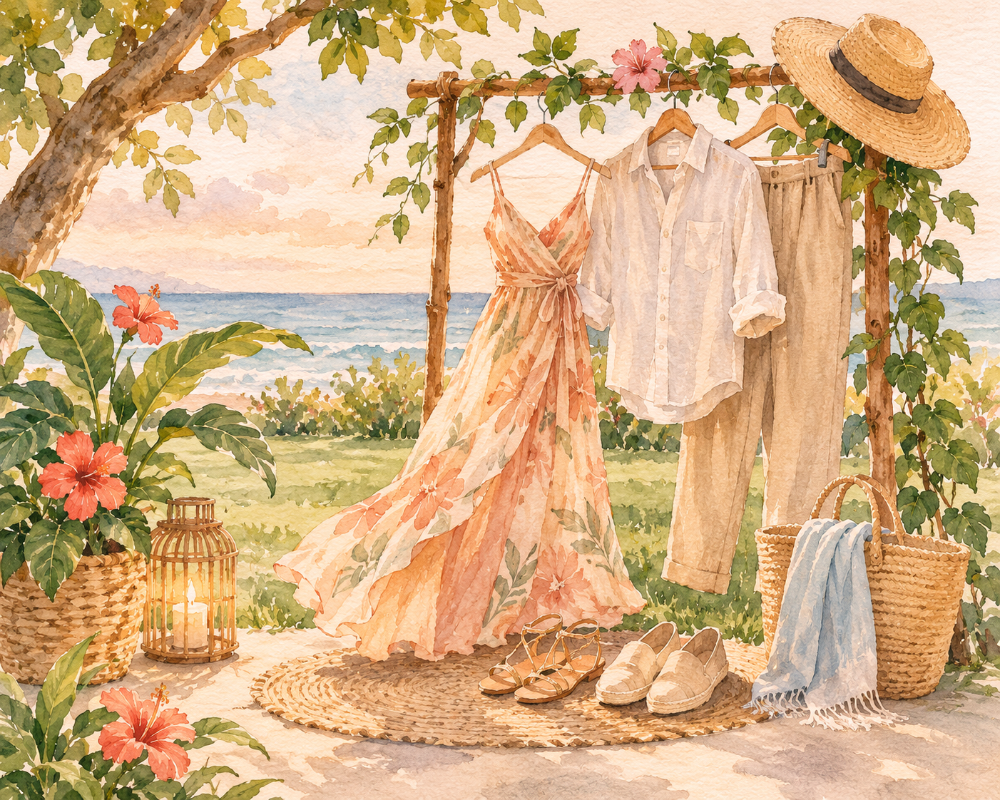
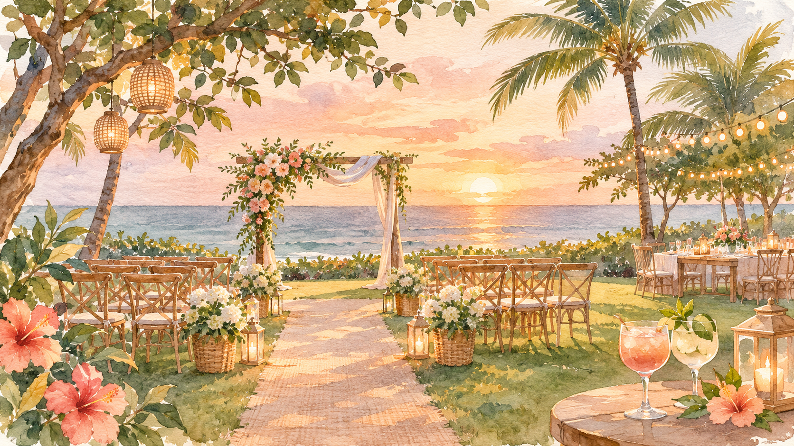

O começo de tudoQUINTA-FEIRA · 22 ABRIL
01
Chegada & boas-vindas
A história começa chegando em uma ilha paradisíaca. Um dia para respirar fundo e entrar no ritmo tranquilo de Comandatuba.
Sem pressa. Você chegou ao paraíso. Cris & Vini
Cris & Vini
22 — 25 DE ABRIL DE 2027 · BAHIA
Mais do que um casamento, queremos dividir com vocês alguns dias de sol, mar, encontros e memórias que ficam.
Cris & Vini
UM PEQUENO ROTEIRO
Preparamos um encontro de quatro dias para aproveitar a ilha sem pressa. Aqui vai o clima de cada momento — os detalhes e as surpresas da programação completa vocês descobrirão quando chegarem.

O começo de tudoQUINTA-FEIRA · 22 ABRIL
01
A história começa chegando em uma ilha paradisíaca. Um dia para respirar fundo e entrar no ritmo tranquilo de Comandatuba.
Sem pressa. Você chegou ao paraíso.SEXTA-FEIRA · 23 ABRIL
02
Um dia para aproveitar o resort, encontrar amigos e família, curtir a piscina, o mar e tudo o que a ilha oferece. O melhor plano é aquele que combina com você.
Sol, conversas e boas lembranças.
A ilha é nossa por alguns diasSÁBADO · 24 ABRIL
03
NOSSO GRANDE DIA
É o dia do nosso sim! Vamos nos encontrar no jardim, de frente para o oceano — com a brisa do mar, flores e as pessoas que amamos por perto.
DOMINGO · 25 ABRIL
04
Um último café, mais alguns abraços e aquela vontade de esticar a viagem só mais um pouquinho. Que a volta para casa seja leve — e cheia de histórias para contar.
Não é adeus. É até a próxima aventura.
Mais um instante para guardar
DRESS CODE · UM TOQUE DE INSPIRAÇÃO
Queremos que vocês se sintam à vontade! A proposta é um visual elegante e leve, com um toque de verão. Não precisa de formalidade: escolham algo especial, mas confortável, que combine com o clima da Bahia e com uma celebração no jardim à beira-mar.
Vestidos, camisas, calças, macacões e sandálias são ótimas inspirações. Para o casamento, escolham algo um pouquinho especial, mas sempre confortável. Afinal, queremos vocês aproveitando cada momento com a gente!

UM RECADO DOS NOIVOS
Este é só um gostinho do que estamos preparando. A programação completa, com os horários e atividades de cada dia, estará esperando por vocês nos quartos na chegada. Por enquanto, guardamos alguns detalhes e surpresas para quando estivermos todos juntos.
Com carinho, Cris & Vini